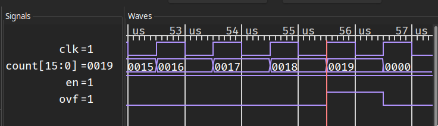

Getting Started¶
This section demonstrates the basic Torii workflow to provide a cursory overview of the language and the toolchain. See the Tutorials section for a step-by-step introduction to the language, and the Language Guide for a detailed explanation of every language construct.
Todo
add link to build system doc
Todo
add link to more complex examples?
A counter¶
As a first example, consider a counter with a fixed limit, enable, and overflow. The code for this example is shown below. Download and run it:
$ python3 up_counter.py
Implementing a counter¶
A 16-bit up counter with enable input, overflow output, and a limit fixed at design time can be implemented in Torii as follows:
1from torii.hdl import Elaboratable, Module, Signal
2
3class UpCounter(Elaboratable):
4 '''
5 A 16-bit up counter with a fixed limit.
6
7 Parameters
8 ----------
9 limit : int
10 The value at which the counter overflows.
11
12 Attributes
13 ----------
14 en : Signal, in
15 The counter is incremented if ``en`` is asserted, and retains
16 its value otherwise.
17 ovf : Signal, out
18 ``ovf`` is asserted when the counter reaches its limit.
19 '''
20 def __init__(self, limit: int):
21 self.limit = limit
22
23 # Ports
24 self.en = Signal()
25 self.ovf = Signal()
26
27 # State
28 self.count = Signal(16)
29
30 def elaborate(self, platform) -> Module:
31 m = Module()
32
33 m.d.comb += self.ovf.eq(self.count == self.limit)
34
35 with m.If(self.en):
36 with m.If(self.ovf):
37 m.d.sync += self.count.eq(0)
38 with m.Else():
39 m.d.sync += self.count.eq(self.count + 1)
40
41 return m
The reusable building block of Torii designs is an Elaboratable: a Python class that includes HDL signals (en and ovf, in this case) as a part of its interface, and provides the elaborate method that defines its behavior.
Most elaborate implementations use a Module helper to describe combinatorial (m.d.comb) and synchronous (m.d.sync) logic controlled with conditional syntax (m.If, m.Elif, m.Else) similar to Python’s. They can also instantiate vendor-defined black boxes or modules written in other HDLs.
Testing a counter¶
To verify its functionality, the counter can be simulated for a small amount of time, with a test bench driving it and checking a few simple conditions:
43from torii.sim import Simulator # noqa: E402
44
45dut = UpCounter(25)
46def bench():
47 # Disabled counter should not overflow.
48 yield dut.en.eq(0)
49 for _ in range(30):
50 yield
51 assert not (yield dut.ovf)
52
53 # Once enabled, the counter should overflow in 25 cycles.
54 yield dut.en.eq(1)
55 for _ in range(25):
56 yield
57 assert not (yield dut.ovf)
58 yield
59 assert (yield dut.ovf)
60
61 # The overflow should clear in one cycle.
62 yield
63 assert not (yield dut.ovf)
64
65sim = Simulator(dut)
66sim.add_clock(1e-6) # 1 MHz
67sim.add_sync_process(bench)
68with sim.write_vcd('up_counter.vcd'):
69 sim.run()
The test bench is implemented as a Python generator function that is co-simulated with the counter itself. The test bench can inspect the simulated signals with yield sig, update them with yield sig.eq(val), and advance the simulation by one clock cycle with yield.
When run, the test bench finishes successfully, since all of the assertions hold, and produces a VCD file with waveforms recorded for every Signal as well as the clock of the sync domain:

Converting a counter¶
Although some Torii workflows do not include Verilog at all, it is still the de facto standard for HDL interoperability. Any Torii design can be converted to synthesizable Verilog using the corresponding backend:
71from torii.back import verilog # noqa: E402
72
73top = UpCounter(25)
74with open('up_counter.v', 'w') as f:
75 f.write(verilog.convert(top, ports = [top.en, top.ovf]))
The signals that will be connected to the ports of the top-level Verilog module should be specified explicitly. The rising edge clock and synchronous reset signals of the sync domain are added automatically; if necessary, the control signals can be configured explicitly. The result is the following Verilog code (lightly edited for clarity):
1(* generator = "Torii" *)
2module top(clk, rst, en, ovf);
3 (* src = "<torii-root>/torii/hdl/ir.py:526" *)
4 input clk;
5 (* src = "<torii-root>/torii/hdl/ir.py:526" *)
6 input rst;
7 (* src = "up_counter.py:26" *)
8 input en;
9 (* src = "up_counter.py:27" *)
10 output ovf;
11 (* src = "up_counter.py:30" *)
12 reg [15:0] count = 16'h0000;
13 (* src = "up_counter.py:30" *)
14 reg [15:0] \count$next ;
15 (* src = "up_counter.py:35" *)
16 wire \$1 ;
17 (* src = "up_counter.py:41" *)
18 wire [16:0] \$3 ;
19 (* src = "up_counter.py:41" *)
20 wire [16:0] \$4 ;
21 assign \$1 = count == (* src = "up_counter.py:35" *) 5'h19;
22 assign \$4 = count + (* src = "up_counter.py:41" *) 1'h1;
23 always @(posedge clk)
24 count <= \count$next ;
25 always @* begin
26 \count$next = count;
27 (* src = "up_counter.py:37" *)
28 casez (en)
29 /* src = "up_counter.py:37" */
30 1'h1:
31 (* src = "up_counter.py:38" *)
32 casez (ovf)
33 /* src = "up_counter.py:38" */
34 1'h1:
35 \count$next = 16'h0000;
36 /* src = "up_counter.py:40" */
37 default:
38 \count$next = \$3 [15:0];
39 endcase
40 endcase
41 (* src = "<torii-root>/torii/hdl/xfrm.py:518" *)
42 casez (rst)
43 1'h1:
44 \count$next = 16'h0000;
45 endcase
46 end
47 assign \$3 = \$4 ;
48 assign ovf = \$1 ;
49endmodule
To aid debugging, the generated Verilog code has the same general structure as the Torii source code (although more verbose), and contains extensive source location information.
Note
Unfortunately, at the moment none of the supported toolchains will use the source location information in diagnostic messages.
A blinking LED¶
Although Torii works well as a standalone HDL, it also includes a build system that integrates with FPGA toolchains, and many board definition files for common developer boards that include pinouts and programming adapter invocations. The following code will blink a LED with a frequency of 1 Hz on any board that has a LED and an oscillator:
1from torii.hdl import Elaboratable, Module, Signal
2
3class LEDBlinker(Elaboratable):
4 def elaborate(self, platform):
5 m = Module()
6
7 led = platform.request('led')
8
9 half_freq = int(platform.default_clk_frequency // 2)
10 timer = Signal(range(half_freq + 1))
11
12 with m.If(timer == half_freq):
13 m.d.sync += led.eq(~led)
14 m.d.sync += timer.eq(0)
15 with m.Else():
16 m.d.sync += timer.eq(timer + 1)
17
18 return m
The LEDBlinker module will use the first LED available on the board, and derive the clock divisor from the oscillator frequency specified in the clock constraint. It can be used, for example, with the Lattice iCEStick evaluation board, one of the many boards already supported by Torii:
Todo
link to list of supported boards
Todo
Link to the installation instructions for the FOSS iCE40 toolchain, probably as a part of board documentation.
20from torii_boards.lattice.icestick import ICEStickPlatform # noqa: E402
21
22ICEStickPlatform().build(LEDBlinker(), do_program = True)
With only a single line of code, the design is synthesized, placed, routed, and programmed to the on-board Flash memory. Although not all applications will use the Torii build system, the designs that choose it can benefit from the “turnkey” built-in workflows; if necessary, the built-in workflows can be customized to include user-specified options, commands, and files.
Todo
link to build system reference
Note
The ability to check with minimal effort whether the entire toolchain functions correctly is so important that it is built into every board definition file. To use it with the iCEStick board, run:
$ python3 -m torii_boards.lattice.icestick
This command will build and program a test bitstream similar to the example above.